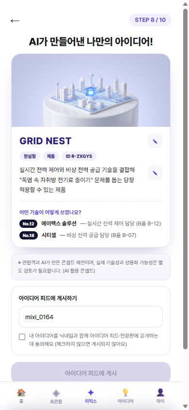
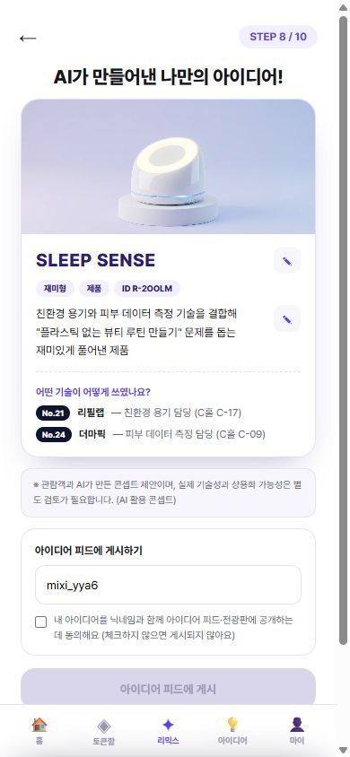
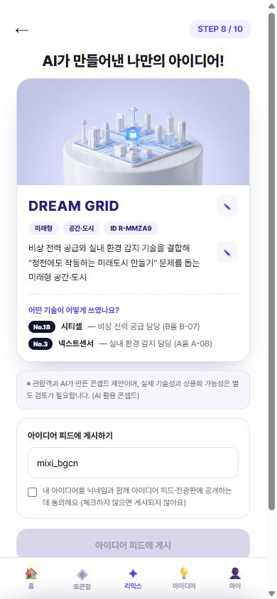

"만약 우리가 이 서비스를 실제로 운영한다면"을 끝까지 밀어붙인 시뮬레이션입니다. 실존 전시회의 검증된 정보 위에서 미션을 설계하고, 가상 참가기업 20부스를 구성하고, 서로 다른 관람객 페르소나 4인이 배포된 프로토타입에서 전체 여정을 실제로 완주했습니다. 참가기업·부스 구성은 가상 시뮬레이션
그린에너텍은 인천시가 주최하고 인천관광공사 등이 주관하는 인천 유일의 탄소중립·신재생에너지 특화 B2B 전시회입니다(5회차, 130개사·250부스). 전시 분야는 에너지 신기술 · 에너지 인프라 · 기후테크 3개 대분류이며, 친환경 플라스틱·탄소중립 공동관과 수출상담회·ESG 콘퍼런스가 함께 열립니다. (공식 사이트·보도 검증, 2026.7 확인)
인천항만공사 공동관은 중소기업 한정 지원(부스비 50%). 브랜드 인지도 없는 기업이 많을수록 블라인드의 가치가 극대화됩니다.
수출·구매상담회 중심 B2B 행사 — 2030 일반 관람객을 위한 참여 장치가 없는 것이 우리가 채울 공백입니다.
경진대회 본선 개최지와 같은 장소. "이 전시장에서 열리는 실제 전시" 기준의 시나리오입니다.
대회 후원사가 실제 주관하는 전시 — 수상 이후 파일럿 제안까지 이어질 수 있는 현실적 경로입니다.
주최사의 과제는 "B2B 기술을 2030의 생활문제로 번역하는 것". 그린에너텍의 공식 전시 분야에서 미션을 도출했습니다 — 관람객은 기술 용어가 아니라 자기 문제로 입장합니다.
| 전시 분야 (공식) | 관리자의 질문 | 관람객 미션 (P02 카드) |
|---|---|---|
| 에너지 인프라 — 저장·그리드 | ESS·그리드 기술을 어떻게 체감시키나 | 🔌 정전 걱정 없는 우리 동네 만들기 |
| 에너지 신기술 — 태양광·BIPV | 발전 기술을 일상 언어로 | 🪟 우리 집 창문으로 전기 만들기 |
| 에너지 인프라 — 히트펌프·단열 | 효율 기술의 비용 절감 번역 | ❄️ 여름 냉방비 반으로 줄이기 |
| 기후테크 — 친환경 플라스틱 공동관 | 소재 기술의 생활 접점 | 🧴 플라스틱 없는 일주일 살기 |
| 에너지·자원 순환 — 폐배터리 | 순환경제를 손에 잡히게 | 🔋 버려지는 배터리 다시 살리기 |
| 에너지 인프라 — V2G | 미래 기술의 개인 편익 번역 | 🚗 내 전기차로 용돈 벌기 |
※ 미션 세트는 전시 ID(?exhibition=)로 전시별 교체되는 구조 — 데모 앱의 범용 미션 8종은 여러 전시 유형을 커버하는 기본 세트입니다.
전 기술 카테고리는 국내에서 실재함을 개별 검증했습니다(정부 정책·산업 보도 근거 16종). 기업명은 전부 가상이며, 실제 운영 시 참가기업의 승인 정보로 대체됩니다.
| 분야 (그린에너텍 공식 분류) | 가상 부스 — 기술 카테고리 (전부 실재 검증됨) |
|---|---|
| 에너지 신기술 (7) | 페로브스카이트 태양전지 · BIPV 태양광 창호 · 수소연료전지 · 소형풍력 · 미세조류 바이오 · 지열 냉난방 · 태양광 O&M 드론 |
| 에너지 인프라 (7) | 가정용 ESS · VPP 전력중개 · 스마트미터(AMI) · V2G 충방전 · 건물에너지관리(BEMS) · 히트펌프 · 진공단열재 |
| 기후테크·순환 (6) | 생분해 플라스틱 · 폐배터리 재활용 · CCUS 탄소포집 · 에너지 하베스팅 · 기후리스크 관리 SaaS · 자원순환 플랫폼 |
※ 에너지 하베스팅·미세조류는 연구·실증 단계 성격이 강해 '연구기관 스핀오프' 부스 콘셉트로 설정 — 조사에서 확인된 시장 성숙도를 반영했습니다.
머릿속 시나리오가 아니라 배포된 프로토타입에서 실제로 클릭해 완주한 기록입니다. 4인의 결과물은 지금 데모 아이디어 피드와 전광판에 시드로 올라가 있습니다.
미션 '폭염 속 전기료' → 블라인드에서 에너지 기술 2개(선택 이유: 필요성·활용성) → 부스 2곳 인증(만족도 ★5) → 현실형·제품 → 게시 → 기업 연락 옵트인 ON
실시간 전력 제어와 비상 전력 공급 기술을 결합한 폭염 대비 스마트 그리드 제품
미션 '플라스틱 없는 뷰티' → 친환경 용기+피부 센서(이유: 신기함) → QR 대신 숫자코드로 인증(대체 경로 검증) → 재미형 → 게시 전에 공유부터 클릭
친환경 용기와 피부 데이터 측정 기술을 결합한 제로웨이스트 맞춤 뷰티 키트
미션 직접 입력 "카페 여름 전기요금 줄이기"(40자 검증) → 서로 다른 3개 기업 기술 조합(최대치) → 부스 3곳 연속 인증 → 현실형·서비스
전력 제어·단열·환경 센서 3개 기술을 결합해 카페 전기요금을 줄이는 서비스
미션 '정전 없는 미래도시' → 비상 전력+환경 센서(이유: 신기함) → 미래형·공간 → 결과명이 마음에 안 들어 'CITY SAFE'를 'DREAM GRID'로 직접 수정(1회 수정 검증, 2번째 시도는 차단됨)
정전에도 작동하는 미래도시 공간 콘셉트 — 본인이 직접 이름 붙임



최하늘의 결과문에서 "비상 전력 공급와" 오류 발견 → 받침 유무를 판별하는 와/과 처리 로직 추가. AI 결과문의 완성도는 공유 의향에 직결되는 디테일.
뷰티 미션 조합에 'SLEEP SENSE'가 나오는 사례 발견 → 결과명 선정 시 미션 카테고리를 우선하도록 개선. 이름이 내 미션과 무관하면 소유감이 깨짐.
같은 카테고리 조합이 모두 같은 이름(COOL LOOP)을 받던 구조 → 카테고리별 이름 풀 + 조합 해시 방식으로 다양화. 4인의 결과가 전부 다른 이름으로 생성됨을 확인.
숫자코드 인증(박세인) · 커스텀 미션 입력(이준호) · 3기술 조합·3부스 연속 인증(이준호) · 제목 1회 수정과 재수정 차단(최하늘) — 명세의 엣지 케이스가 실제로 작동.
4인 페르소나 에이전트가 각자의 눈으로 배포 웹을 검토한 결과입니다. 2건은 즉시 반영했고, 백로그 ①~④도 모두 배포 웹에 반영 완료했습니다. (예상 공유 확률: 김도윤 55% · 박세인 35% · 이준호 40% · 최하늘 55%)
이준호 검증 — 직접 입력한 미션("카페 전기요금")이 기술 추천 점수에 반영되지 않던 문제 → 미션 키워드 매칭 가중치 추가. 직접 입력자가 프리셋 사용자보다 덜 맞는 추천을 받던 역설 해소.
최하늘 검증 — 게시 후 내 작품이 전광판에 뜨는지 알 수 없던 블랙박스 → 게시 완료 안내에 "다음 REMIX LIVE(매시 정각) 전광판 후보" 명시.
박세인 — 결과 화면·마이페이지의 '스토리로 저장' 버튼이 결과 카드를 1080×1920 PNG(스타일 락 이미지·아이디어명·사용 기술·#NOLOGOREMIX·MIXI 워터마크·하단 면책)로 즉시 다운로드.
김도윤 — 기술카드 상세에 접이식 스펙(핵심 사양·기술 성숙도 TRL·적용 시나리오) 추가. 기업 식별 정보는 리빌 전까지 계속 비공개, 데모 예시 사양임을 명시.
이준호 — 결과 화면에 '도입 상담 요청(B2B)' 버튼과 건별 동의 시트 추가(매장·시설/회사·제품 유형 선택). 마이페이지 옵트인은 채용·소개 자료 수신으로 문구 분리.
박세인·최하늘 — 생성 대기 화면에서 선택한 기술칩들이 교차하며 섞이는 리믹스 모션 재생, 결과 화면 '전광판 미리보기'로 1920×1080 REMIX LIVE 프레임에 내 카드가 걸린 목업 표시.